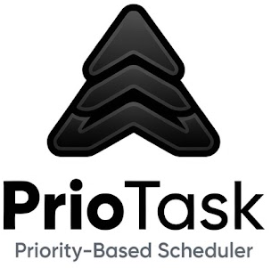

No pending tasks in the min-heap. Add a new task or switch profiles to get started.
Tasks and Min-Heap state are automatically serialized to isolated localStorage keys per user profile.
localStorage